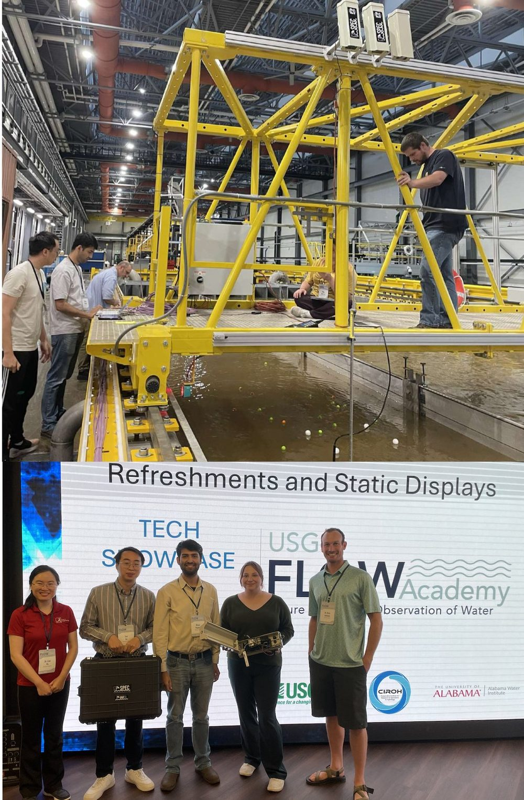
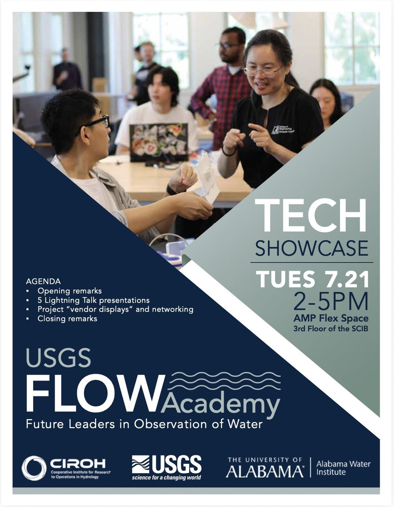
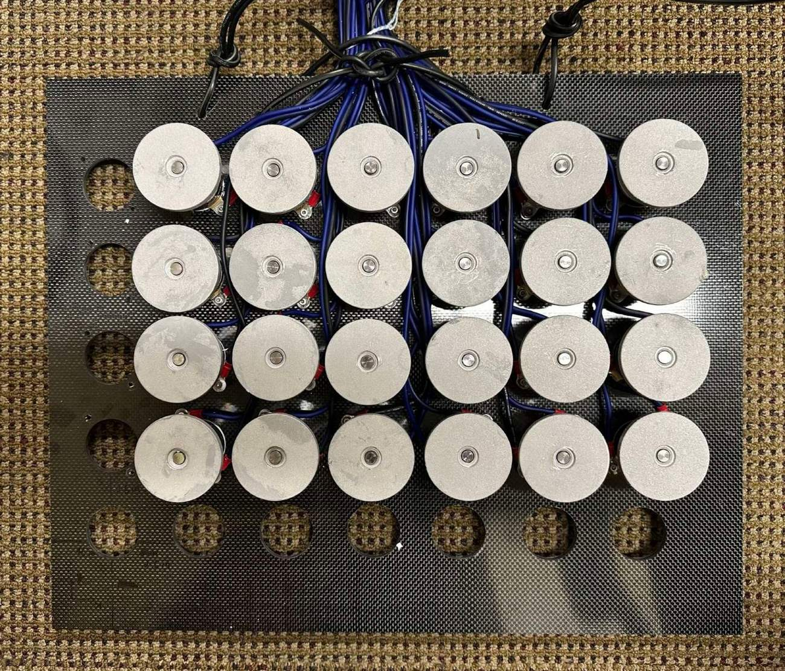
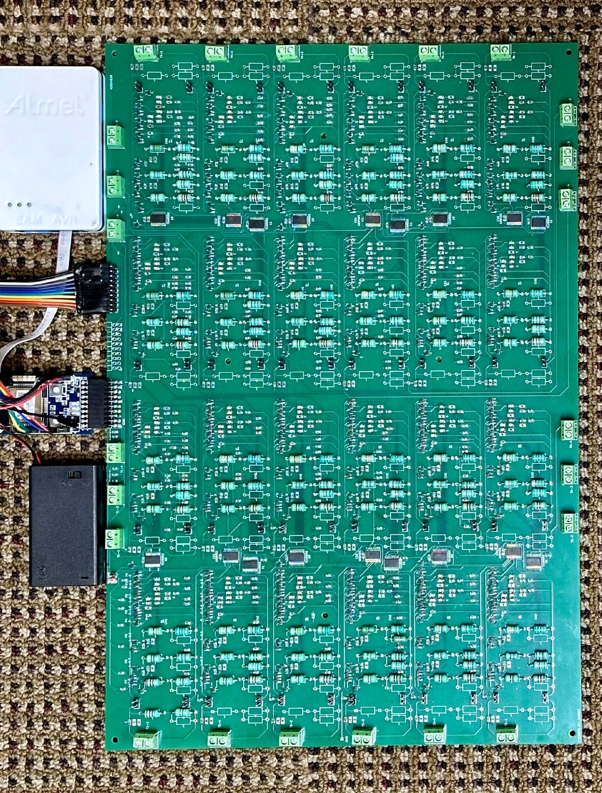
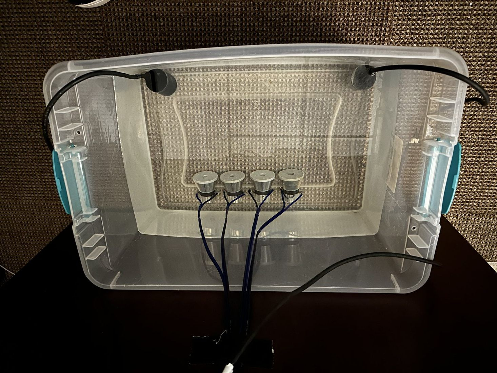
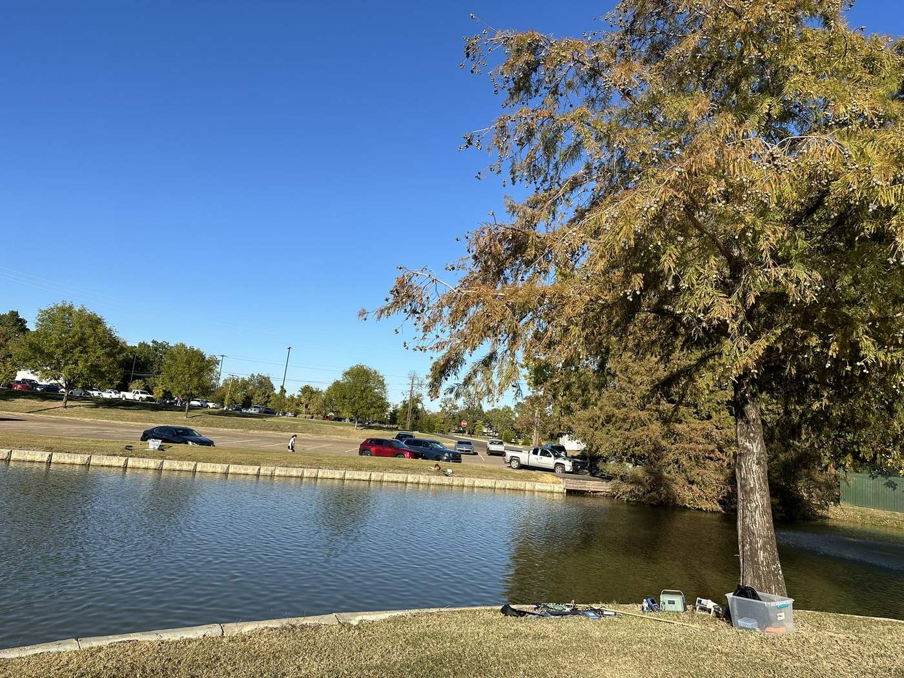

Communication
Advance the UA‑RIS architecture and establish the fundamental performance limits of UA‑RIS communication in complex underwater environments, so that predicted gains can be trusted before a system ever reaches the water.
Severing the ocean's “surface umbilical” by embedding ultra‑low‑power programmable acoustic surfaces in the seafloor, turning the seabed itself into a self‑sustaining information backbone for high‑rate communication and in‑situ localization.
Lina Pu, Principal Investigator
Department of Computer Science, The University of Alabama
The aspiration of this CAREER project is a low‑signature UA‑RIS network that delivers high‑rate communication and in‑situ localization for the next generation of underwater networks.
The ocean underwrites nearly every pillar of modern society, yet it remains a blind spot in national infrastructure. Only about a quarter of the seafloor has been mapped, and that figure has barely moved since the Apollo era. The bottleneck is not sensing technology. It is the absence of underwater communication and localization infrastructure.
Electromagnetic waves are extinguished within meters of seawater. Acoustic links remain bandwidth‑starved over kilometer scales, and there is no positioning infrastructure below the surface at all. As a result, today's ocean observatory backbone is still a surface umbilical: million‑dollar buoys, even costlier cabled systems, and autonomous vehicles that must surface for every position fix and data dump.
This project breaks that dependence by moving communication and localization down to the seabed. Each UA‑RIS panel is an electronically tunable array of piezoelectric reflectors that can steer, focus, and combine acoustic energy, and that can provide angle‑based localization, all while drawing sub‑watt power that emerging wave and bio‑chemical harvesters can supply.
Surface infrastructure demands mooring and anchoring, suffers mechanical fatigue from waves and storms, and is exposed to vandalism, vessel strikes, and biofouling. Surface motion also injects noise into acoustic systems, and dense buoy fields obstruct navigation lanes. These factors impose hard scalability limits that a seabed deployment simply avoids.
Conventional relays receive, decode, and retransmit, typically consuming tens of watts. Sustaining that underwater means tethering to a solar buoy or running cable to shore, which reintroduces every surface vulnerability. UA‑RIS panels contain no active front ends and consume sub‑watt power, low enough to be met by ocean energy harvesting.
Swarms of affordable vehicles moving through UA‑RIS‑enabled seafloor corridors, holding high‑rate connectivity for telemetry and for distributed AI in which vehicles share learned models and adapt missions in real time.
Dense carpets of UA‑RIS nodes supporting always‑connected biological, chemical, and geophysical instruments on the seabed, capturing fine‑scale processes such as sediment transport at unprecedented fidelity.
Because the panels operate passively and can be embedded in the seabed, they offer covert, resistant links for harbor defense, subsea asset monitoring, and disaster‑response robotics.
The existing body of RIS knowledge is rooted in terrestrial radio frequency settings. Because acoustic and RF signals differ fundamentally, RF‑RIS architectures, algorithms, and protocols cannot be carried over directly. This project pursues an end‑to‑end agenda spanning communication, localization, and networking.
Advance the UA‑RIS architecture and establish the fundamental performance limits of UA‑RIS communication in complex underwater environments, so that predicted gains can be trusted before a system ever reaches the water.
Enable underwater systems to determine where they are using fully passive reflector panels, removing the dependence on active front ends and on surfacing for a position fix.
Establish network‑scale medium‑access principles for UA‑RIS networks, where second‑scale propagation delays and decentralized, mobile users break the assumptions behind terrestrial designs.
Results, models, datasets, and open‑source tools will be posted here and released publicly as they are published.
Work by the project team on underwater acoustic reconfigurable intelligent surfaces, including the groundwork that this CAREER project builds upon.
A complete publication list is available on the PI's departmental page. Models, datasets, and the AquaSim‑RIS simulator produced under this award will be released openly as they mature.
Principal Investigator
Department of Computer Science, The University of Alabama
The PI works at the intersection of underwater acoustic networking and passive, battery‑free wireless communication. With seed funding from the Alabama Water Institute she built the first working UA‑RIS prototype and carried out its first lake‑scale field trial, the experimental backbone for this project. Her earlier work on asymmetric collision phenomena, range uncertainty, and MAC protocol evaluation in sea trials received a Best Paper Award at IFIP Networking, and she has led two NSF projects on battery‑free RF backscatter systems whose passive synchronization results directly seeded the passive localization idea in Thrust 2.
Graduate and undergraduate students interested in underwater acoustics, wireless networking, embedded systems, or ocean robotics are encouraged to get in touch. Undergraduates can also engage through the USGS FLOW Academy, REU programs, and the University's Randall Scholar and Emerging Scholar programs. Write to lina.pu@ua.edu.
Ongoing education and outreach efforts by the PI that connect directly to the themes of this project. These activities are supported separately and are not funded by this award.
Tomorrow's hydrologists, coastal engineers, and blue‑tech entrepreneurs need to work across hydrology, electronics, wireless networking, edge computing, and data analytics. As Co‑PI on the CIROH‑supported project Development of Multidisciplinary Curriculum for Future Workforce in Hydrologic Instrumentation, the PI designed and taught the University of Alabama's first special topics course integrating IoT technology with hydrology. She also created the University's first IoT course, now offered annually.


The USGS‑funded FLOW Academy (Future Leaders in Observation of Water) is a national summer program that immerses undergraduate and graduate students in hands‑on water‑observing technology. The PI has served in both cohorts to date. As Innovation Mentor in 2025, she mentored a student team building an affordable, open‑source PIV system for riverine velocimetry. As Technical Expert in 2026, she developed a series of lectures and workshops on water‑observation sensing, networking, and computing.
The UA‑RIS prototype and the experiments that validated it, built with seed funding from the Alabama Water Institute and forming the experimental groundwork for this project.



